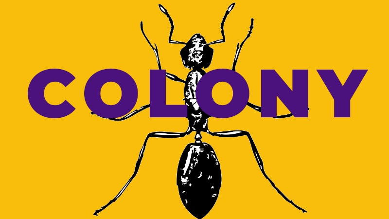

Welcome to Colony, an insect world of interconnected colonies of bees, ants, wasps and dragon-flies. Your goal is to ensure the survival of your species against a range of challenges that include other insect species, hungry anteaters, disastrous weather events and encroaching habitat loss.

2222 is a dystopian adventure set two hundred years into the future. The world speaks a single language and is ruled by a single totalitarian government which maintains absolute power using a cloned humanoid army controlled by a global satellite system. The satellites also stream government propaganda constantly through the personal devices that citizens must carry with them at all times. Your task is to build a network of allies and, using a range of skills including hacking and coding, to shut the satellites down.

Time Machine is a steampunk-inspired game in which you travel through time on the trail of a network of elusive and secretive villains who communicate via mental telepathy and enigmatic messages encoded into books, paintings, music and films.